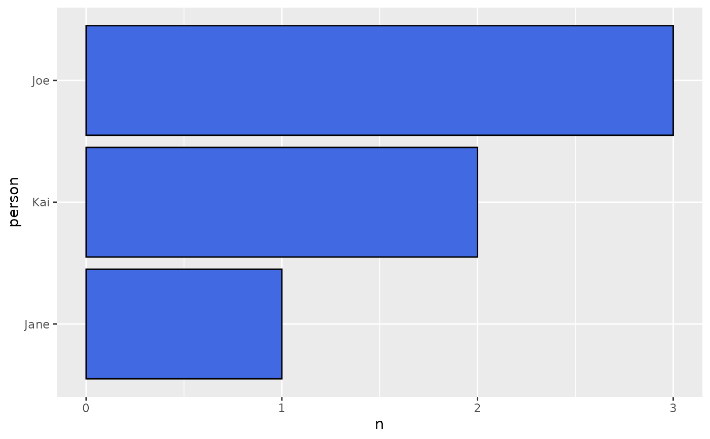
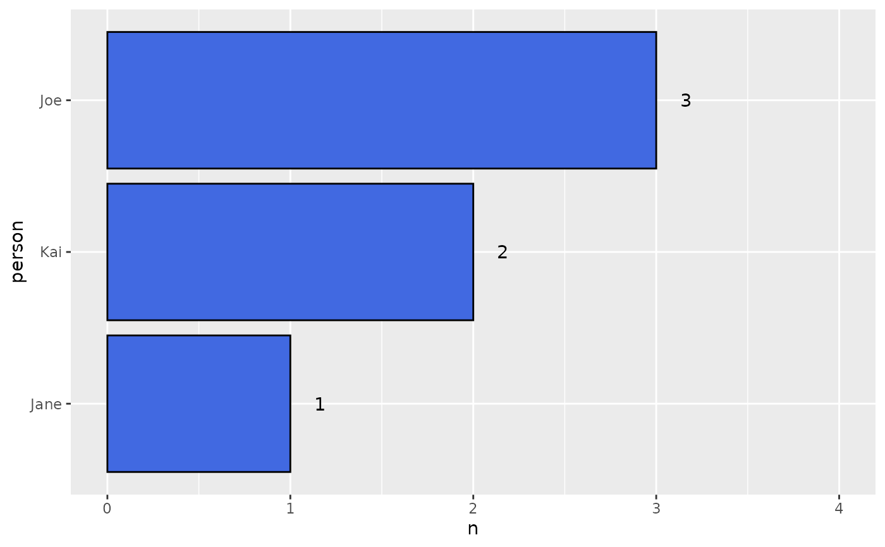

Generates a column plot from a frequency table, with categories sorted by descending frequency.
Usage
count_plot(
dat,
var = NULL,
count_var = n,
head_n = nrow(dat),
label = FALSE,
hjust = -0.1
)Arguments
- dat
Frequency table (tibble, data.frame, or matrix) that includes a categorical (counted or grouped) and a corresponding count column (usually, 'n').
- var
The categorical variable in the frequency table, unquoted.
- count_var
The count of the variable, usually 'n', unqouted. By default, it is assumed to be 'n'.
- head_n
The number of final unique values to include in the plot.
- label
(Optional) If TRUE, will provide text of the frequnecy count to the right of each bar.
- hjust
(Optional) Horizontal offset for x-axis labels; effective only when label = TRUE.
Examples
df <- data.frame(person = c("Jane,Joe", "Joe", "Joe,Kai", "Kai"))
# Regular count plot without labels
df |> unique_count(person) |> count_plot(person)

# With labels
df |> unique_count(person) |> count_plot(person, label = TRUE, hjust = 2)
